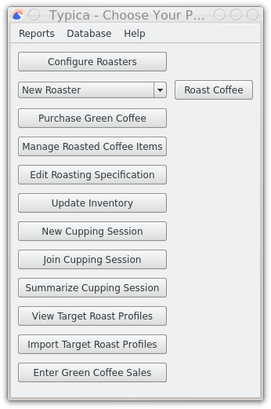
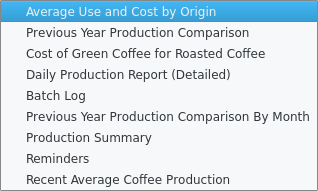
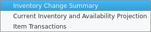

Main navigation window
Most of the functionality in Typica is available through the main navigation window.
Buttons
Configure Roasters
Typica can communicate with different pieces of data acquisition hardware which must be configured before use. Various features related to recording roasting data can be set in the configuration window.
Roast Coffee
Once at least one coffee roaster has been configured, it will be available from the selector next to the Roast Coffee button. When you want to roast coffee, select the machine you'll be using and click the Roast Coffee button. This will take you to the logging view.
Purchase Green Coffee
Typica tracks green coffee inventory. This button allows you to enter the details of green coffee purchases.
Manage Roasted Coffee Items
When entering the details of a new production batch, you will want to select a roasted coffee item. This is connected to the green coffee(s) used, a target roast profile and roasting specification if set. This button allows you to create new roasted coffee items, discontinue items so that they will not show up in lists, and bring back old items.
Edit Roasting Specification
Expected percent weight loss and other information can be presented when roasting coffee for use in determining if a batch matches its product specification.
Update Inventory
Inventory and loss transactions can be used to adjust green coffee inventory.
New Cupping Session
Join Cupping Session
Summarize Cupping Session
Typica includes a set of cupping features. Some people use this, but the author does not recommend it. Something much better will be available in the future.
View Target Roast Profiles
Any data ever saved as a target roast profile for roasted coffee items can be seen here.
Import Target Roast Profiles
It is possible to save batch data to disk instead of or in addition to saving that to the database. These files can be shared with other people using Typica. If you want to set data from one of these files as a target roast profile for a given roasted coffee item, this is where you do that.
Enter Green Coffee Sales
If you sell green coffee, the inventory can be adjusted to reflect that here.
Reports Menu

Production
Production reports present information related to coffee roasting activity.
Average Use and Cost by Origin
Previous Year Production Comparison
Cost of Green Coffee for Roasted Coffee
Daily Production Report (Detailed)
Batch Log
Previous Year Production Comparison By Month
Production Summary
Reminders
Recent Average Coffee Production
Purchase
Purchase reports present information related to green coffee purchases.

Coffee Purchase Previous Years Comparison
Invoices
Sales
Sales reports present information related to sales.
Green Coffee Sales
Inventory
Inventory reports present information on inventory.
Inventory Change Summary
Current Inventory and Availability Projection
Item Transactions
Database Menu
Forget Connection Details
This menu item can be used to force Typica to prompt for database connection information the next time Typica is opened.